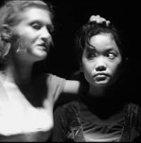

Creating performance with Sleepwalk Collective - 3 day workshop.
- Dato:
- 10.04.2013 til 12.04.2013
- Start kl :
- 10:00
- Slutt kl :
- 16:00
- Pris:
- 700,-
- Adresse:
- Norsk Skuespillersenter, Welhavensgate 1, Oslo
 Det prisvinnende spansk-engelske teaterkompaniet Sleepwalk Collective kommer til Oslo! Gå ikke glipp av denne workshopen der du vil lage grensesprengende teater, annerledes enn det meste du har sett før.
{kind=link}
I løpet denne tredagers workshopen vil du lære om sentrale idéer og teorier fra performance-teater, og benytte disse i praksis gjennom forskjellige øvelser. Du vil også lære teknikker for produksjon av scenisk materiale, blant annet text-frames, scores og station work. Ved slutten av kurset vil deltakerne skape hver sin korte performance som de viser de andre deltakerne.
Workshopen ledes av grunnleggerne av Sleepwalk Collective, iara Solano (Spania) og Sammy Metcalfe (UK). Foregår på engelsk.
Gratis billetter til forestilling inkludert!
Sammy Metcalfe er i Norge for å spille forestillingen The Predictions. Hver dag i 365 dager har Sammy spådd verdens tilstand lørdag 13. april 2013. Den 13. april kl. 18.00 framfører han alle spådommene i en durational performance på Cafeteatret på Grønland. Forestillingen er produsert av Imploding Fictions, som gir bort gratisbilletter til alle deltakerne på kurset!
About Sleepwalk Collective
Sleepwalk Collective is an award-winning live-art and experimental theatre group creating intimate performance experiences. The company create work both in the UK and Spain.
"We make fragile, nocturnal works for theatres and other spaces, emerging from a fascination with pop culture junk, intoxication, and the mysteries and complexities of our relationships with each other."
The company has worked in cities across the UK, Spain, Finland, Iceland and Estonia. They have worked and trained with members of Song of the Goat (Poland), F2 Performance Unit (Greece), La Claca (Spain), LUME Teatro (Brazil) and Shinonome Butoh (Japan), and have collaborated extensively with Zecora Ura Theatre (UK/Brazil).
Since starting the company in 2006, Sleepwalk Collective has produced a dozen productions, performed extensively in Spain, the UK and the rest of Europe. Their latest show Amusements was performed to great acclaim at the Edinburgh Festival 2012. The company is currently based in Vitoria-Gasteiz in the Spanish Basque Country.
Pris for medlemmer av NSF: 600,-